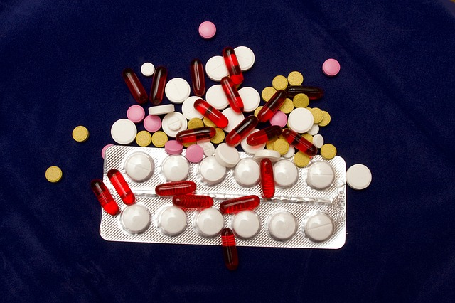
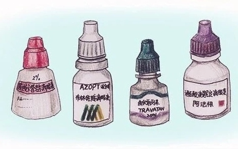

药物治疗
青光眼的药物治疗主要作用是降眼压，其措施主要是减少房水的生成量和增加房水流出量，用到的药物有β肾上腺素受体阻滞剂和前列腺素衍生物等。
发病率、致盲率、我国青光眼比率
理想的病因分类既能反应病因和病机，又能指导临床诊断和治疗。
临床上一般将青光眼分为三大类：原发性青光眼；继发性青光眼；先天性青光眼。
根据前房前角的形态及发病缓急，又分为急、慢性闭角型青光眼，开角型青光眼
根据发病年龄又可为婴幼儿性青光眼及青少年性青光眼，30岁以下的青光眼均属此类范畴。
由疾病引起的青光眼均属此类，病因颇复杂，种类繁多，这里简述最常见的几种继发性青光眼
急性闭角型青光眼：急性闭角型青光眼的发生，是由于眼内房角突然狭窄或关闭，房水不能及时排出，引起房水涨满，眼压急剧升高而造成的。多发于中老年人。
慢性闭角型青光眼：发病年龄30岁以上。此型发作一般都有明显的诱因，如情绪激动、视疲劳、用眼及用脑过度、长期失眠、或局部、全身用药不当等均可诱发。
原发性开角型青光眼：多发生于40岁以上的人，25%的患者有家族史，绝大多数患者无明显症状，有的直至失明也无不适感，发作时前房角开放。
Q1：为什么会得原发性青光眼?
A1：导致原发性青光眼的原因很复杂，而最主要的危险因素就是——眼压升高。
Q2：原发性青光眼有哪些高危因素？
A2：临床上发现有青光眼家族史的人发病率会增~10倍加，父母、兄弟、姐妹等一级亲属中若患有青光眼，其发病率会增加5；
年龄40岁以上；
高度远视、高度近视；
患有糖尿病、高血压、肾炎等全身性疾病；
长期服用糖皮质激素类药物；
精神压力较大，负性情绪频发且剧烈变化的性格心理因素；
暗室停留或阅读时间过长，过度疲劳等。
婴幼儿性青光眼：一般将0～3岁青光眼患儿归为此类，此型是先天性青光眼中最常见者，母体内即患病，出生后立即或缓慢表现出症状。
青少年性青光眼：发病年龄3～30岁之间，此型临床表现与开角型青光眼相似，发病隐蔽，危害性较大。近年来此型多发生于近视患者，且有发病率不断上升的趋势，90%以上的患者并不表现为典型青光眼症状。
1.三岁以前的先天性青光眼初期表现为大眼睛，特别是黑眼仁长大，看起来多乖的，但随着眼睛越长越大，娃娃出现怕光流泪，黑眼仁发灰，视力严重受损。
2.跟成人的青光眼治疗原则有点不同，小儿青光眼首选手术治疗，在麻醉允许的情况下，越早越好。
屈光不正继发青光眼：由于屈光系统调节失常，睫状肌功能紊乱，房水分泌失衡，加之虹膜根部压迫前房角，房水排出受阻，所以引起眼压升高。
白内障继发青光眼：晶体混浊在发展过程中水肿膨大，或易位导致前房相对狭窄，房水排出受阻，引起眼压升高，一旦白内障术后，很快视神经萎缩而失明。
外伤性青光眼：房角撕裂，虹膜根部断离，或前房积血，玻璃体积血，视网膜震荡，使房水分泌，排出途径受阻，继发青光眼视神经萎缩。
1.国内继发性青光眼约占青光眼患者总量13%~30%。
2.主要病因包括眼部炎症、眼外伤、白内障、眼底血管性疾病、眼科手术、药物(特别是激素)和眼部肿瘤等。
3.主要表现为视力下降或视物模糊、眼痛或眼胀痛，严重者可伴有头痛、恶心、呕吐等。
4.降眼压治疗，同时治疗原发性眼病。
5.长期持续性高眼压，可引起不可逆性视功能受损，严重者可以致盲。
6.预后取决于高眼压严重程度和持续时间，以及原发性眼病的危害程度。早发现、早治疗，有利于视功能的保护。
青光眼早期常常表现为特定的症状，当身体出现这些信号，应及时检查
预防所能起到的作用有限，损伤又不可逆，对付青光眼最好的办法，就是早期发现。
眼球内部的压力，简称为眼压。青光眼是与眼压密切相关的眼病，所以眼压一定要测，虽然眼压高不一定就是青光眼，正常眼压也不排除青光眼，不过在医生判断青光眼或已经确诊为青光眼后明确类型及治疗方法时，眼压还是非常重要的。
因为青光眼会造成视神经萎缩，通过对眼底视神经和视网膜的检查能直接反映视神经的情况。主要用眼底镜、眼底照相、视网膜激光断层扫描仪，还有一些辅助检查，帮助医生记录、观察视神经的变化，以此来判断是否有青光眼。
视野检查主要检查视野是否有损害，并可以检查视神经功能状态和判断青光眼是否进展。目前主要有静态和动态检查，静态视野也就是电脑视野，主要在早期、中期患者使用;动态视野，主要在中晚期患者使用。早期青光眼损害表现为轻微的视野改变。
青光眼有多种类型，如果确诊是青光眼，还需要通过房角镜来区别是开角型还是闭角型，房角是宽还是窄，是否有异常。检查过程中，会使用眼药水麻痹眼睛，使房角镜可以放在眼睛上，这可以让医生判断虹膜与角膜的角度是开放还是狭窄和闭合的。
预防才是最好的医治手段
体育锻炼能使血流加快，眼底瘀血减少，房水循环畅通，眼压降低。但不宜做倒立，以免使眼压升高。
睡眠不安和失眠，容易引起眼压升高，诱发青光眼，睡可以洗脚喝牛奶来帮助入睡，必要时服催眠药。
生气和着急以及精神受刺激，很容易使眼压升高，所以平时要保持愉快的情绪，不要因为琐事焦虑不安。
在暗室工作的人，每1～2小时要走出暗室或适当开灯照明。看电影和看电视时也要在旁开小灯照明。
不管是体力劳动还是脑力劳动，身体过度劳累后都易使眼压波动，所以要注意生活规律，劳逸结合，避免过劳。
暴饮暴食会使眼压升高，不吸烟少喝酒，适当咖啡不喝浓茶，少吃辛辣和强刺激性的食物。
这两类人群建议定期检查眼睛： 1.40岁以上的人； 2.有家族史、糖尿病且高度近视的人。